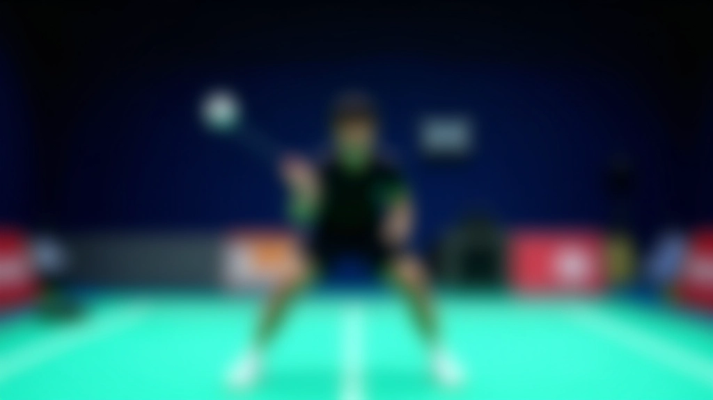
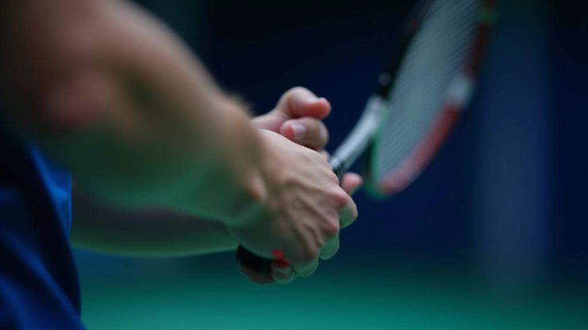
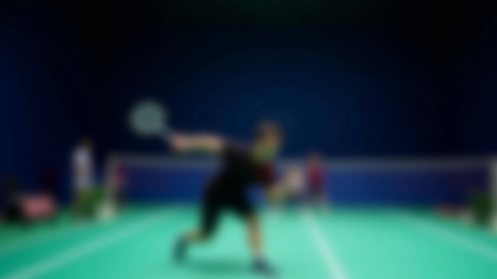
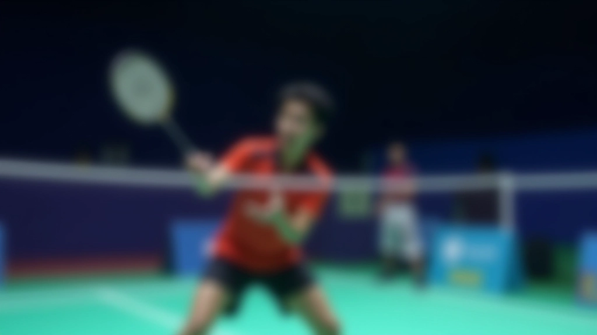
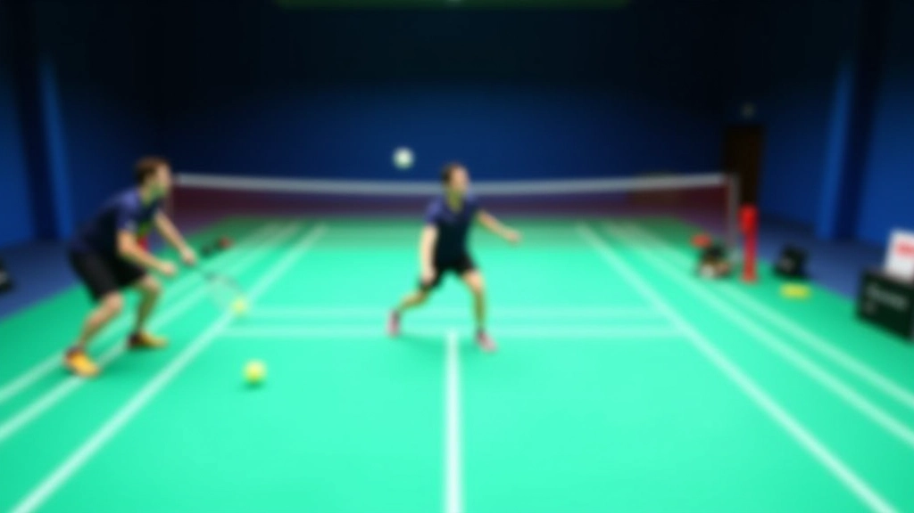

الموضع هو كل شيء
لا يوجد شيء مثل الموضع الصحيح أمام الشبكة. إنه الفرق بين نقطة يسهل الحصول عليها وفرصة ضائعة. عندما تكون قريباً من الشبكة، فأنت في أفضل موضع للهجوم — لكن فقط إذا وقفت في المكان المناسب.
الموضع المثالي يعني أن تكون على بُعد متر تقريباً من الشبكة، مع الحفاظ على توازن جسمك. قدماك يجب أن تكونا متباعدتين بنفس عرض الكتفين. هذا يعطيك الثبات والمرونة معاً. تخيل أنك واقف على نابض — جاهز للحركة في أي اتجاه لحظة يرى خصمك الكرة.
الخطأ الشائع؟ الوقوف قريب جداً. نعم، نعم — كلنا نريد أن نكون قريبين. لكن إذا كنت على بُعد ٥٠ سم فقط من الشبكة، فلا تستطيع الرد على الكرات السريعة. تحتاج إلى مساحة صغيرة للحركة.


القبضة الخفيفة تحكم الكرة
معظم اللاعبين يمسكون بالمضرب بقوة. يخافون من أن تنزلق الكرة. لكن هذا يفعل عكس ما تريد. القبضة الخفيفة هي السر الحقيقي للتحكم في الشبكة.
فكر بالأمر هكذا — إذا أمسكت بشيء بقوة شديدة، لا يمكنك الشعور به. وبدون الشعور، لا توجد تحكم. عندما تمسك المضرب بخفة، تشعر بكل ما يحدث. تشعر بالكرة عندما تضربها. تشعر بالاهتزازات. تشعر بالاتجاه الذي تريد أن تأخذه الكرة.
استخدم قبضة شرقية للضربات القصيرة. هذه القبضة تسمح لك بالتحكم الدقيق. الضغط على المضرب يجب أن يكون ٥ من ١٠ فقط — متوسط. قوي بما يكفي لتثبيت الكرة، خفيف بما يكفي للشعور بكل حركة.
هذا المقال يقدم إرشادات تعليمية عملية لتحسين مهارات الريشة الطائرة. كل لاعب مختلف، والتقدم يعتمد على التدريب المنتظم والممارسة الفعلية مع مدرب مؤهل. النتائج تختلف من شخص لآخر حسب مستوى البداية والالتزام بالتدريب.
الحركة الدقيقة بدلاً من الحركة الكبيرة
الخطأ الأكبر الذي يرتكبه اللاعبون الناشئون هو التأرجح الكبير للمضرب. يعتقدون أنهم يحتاجون إلى قوة. لكن عند الشبكة، القوة غير مفيدة. أنت تحتاج إلى دقة.
الحركة الصحيحة عند الشبكة تبدأ من المعصم والساعد فقط. لا تحرك كتفك. لا تحرك ذراعك كلها. حركة المعصم بمسافة ١٥-٢٠ سم كافية تماماً. هذا يعطيك السيطرة الكاملة على الكرة.
يُطلق عليها الضربة القصيرة لسبب. الهدف هو إرسال الكرة فوق الشبكة مباشرة، قريبة جداً من الشبكة بحيث لا يستطيع خصمك الوصول إليها بسهولة. حركة صغيرة، نتيجة كبيرة.


القراءة والتوقيت
هنا يأتي الجزء الذي يفصل اللاعبين الجيدين عن العظماء. أنت لا تحتاج فقط إلى ضربة جيدة. تحتاج إلى معرفة متى تضرب.
عندما تكون أمام الشبكة، راقب خصمك. أين يقف؟ هل يبتعد؟ هل يقترب؟ إذا كان بعيداً عن الشبكة، فهذا وقتك. أرسل كرة قصيرة جداً. سيضطر للركض نحوك. إذا كان قريباً، فأنت تحتاج إلى ضربة مختلفة — ربما دفعة سريعة أو ضربة جانبية.
التوقيت هو كل شيء. ضرب الكرة في الوقت المناسب يعني ضربها عند ذروتها، عندما تكون على أعلى نقطة. هذا يعطيك أفضل زاوية. في الواقع، معظم النقاط التي تُنهى عند الشبكة تنهى لأن اللاعب قرأ اللعبة بشكل صحيح، لا لأنه قوي.
ثلاث ضربات شبكة يجب إتقانها
الضربة القصيرة (Drop Shot)
كرة تسقط بسرعة بطيئة جداً فوق الشبكة مباشرة. الهدف جعل خصمك يركض للأمام. تحتاج إلى تحكم عالي جداً وحركة معصم ناعمة.
الضربة الدافعة (Push Shot)
كرة سريعة نسبياً مع حركة دقيقة. تستخدمها عندما تكون الكرة بطيئة قادمة إليك. الهدف إرسال الكرة بسرعة لا تتوقع خصمك.
الضربة الجانبية (Slice Shot)
كرة بحركة جانبية تجعلها تنحرف عن المسار المتوقع. صعبة جداً على خصمك أن يتوقعها. تحتاج إلى ممارسة كثيرة لإتقانها.

الخطوة التالية
الهجوم من الشبكة ليس شيئاً تتعلمه مرة واحدة ثم تنساه. إنه شيء تحسنه مع كل ممارسة. ابدأ بالموضع. تأكد من أنك تقف في المكان الصحيح. ثم اعمل على القبضة والحركة. بعدها، ركز على التوقيت والقراءة.
اللاعبون الحقيقيون يعرفون أن إنهاء النقطة عند الشبكة ليس حظاً. إنه مهارة. وأي مهارة يمكن تحسينها. خذ وقتك. لا تتعجل. كل جلسة تدريب فرصة لتصبح أفضل قليلاً.
الآن اذهب للملعب وجرّب ما تعلمته. لن تحسن كل ضربة في البداية. لكن مع الممارسة، ستصبح واثقاً. وعندما تصبح واثقاً، ستبدأ في إنهاء النقاط بثقة.